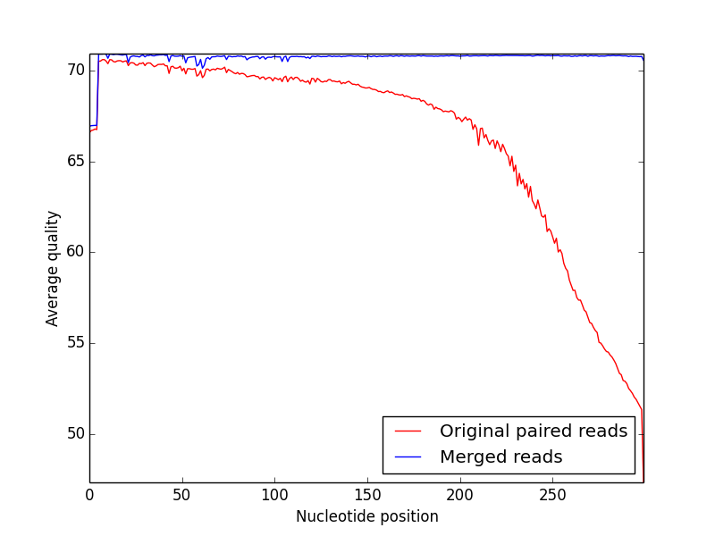
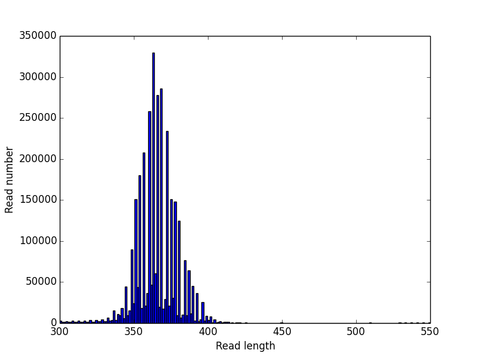

IgRepertoireConstructor performs error-correction of immunosequencing reads and uses mass spectra to validate the constructed antibody repertoires. IgRepertoireConstructor pipeline is presented below:
- Library preparation.
IgRepertoireConstructor takes Illumina MiSeq paired end reads as an input and expect that each left and right reads overlap and cover variable region of antibody.
IgRepertoireConstructor stitches paired-end reads and removes contaminations using alignment of stitched reads against Ig germline database.
This procedure significantly improves quality of input reads (left) and allows one to constructs reads covering variable region of antibody (right):
|  |
 |
| Average quality of reads before (red) and after (blue) merging |
Histogram of merged read length distribution (human, heavy chain repertoire of IgM) |
- Construction of antibody repertoire.
IgRepertoireConstructor takes as an input reads covering variable region of antibodies and corrects Illumina sequencing errors.
Algorithm constructs Hamming graph on input reads and uses accurate clustering techniques for reconstruction of original antibody clusters:
 |
 |
| Example of connected component of Hamming graph constructed from immunosequencing reads (human, heavy chain repertoire of IgM). |
Clusterization of Hamming graph performed by IgRepertoireConstructor. Each color corresponds to single antibody. |
- Immunoproteogenomics analysis. Constructed repertoire can be used as database for peptide identification from mass spectra. IgRepertoireConstructor takes as an input MZID file and computes various statistics about constructed repertoire.